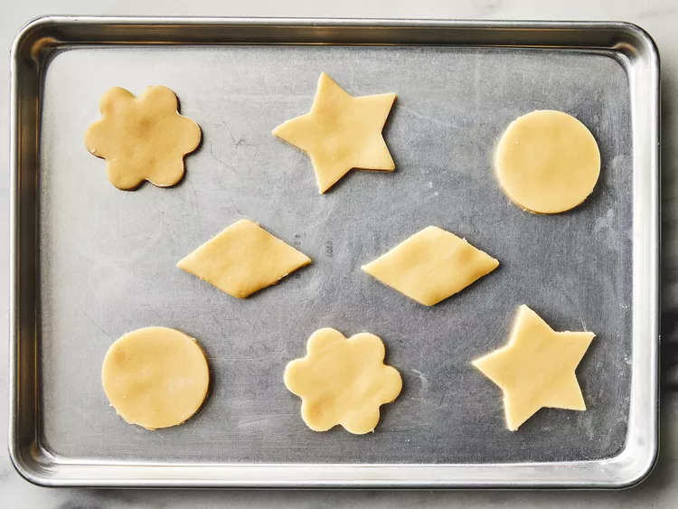

| Prep Time: | Bake Time: | Chill Time: |
|---|---|---|
| 20 mins | 6 mins | 1 hr |
| Total Time: | Servings: | Yield: |
| 1 hr 26 mins | 60 | 60 cookies |
Ingredients
- 1 ½ cups butter, softened
- 2 cups white sugar
- 4 eggs
- 1 teaspoon vanilla extract
- 5 cups all-purpose flour
- 2 teaspoons baking powder
- 1 teaspoon salt
Gather all ingredients.
Cream together butter and sugar in a large bowl with an electric mixer until smooth.
Beat in eggs and vanilla. Stir in flour, baking powder, and salt.
Cover, and chill dough for at least 1 hour (or overnight).
Preheat the oven to 400 degrees F (200 degrees C).
Lightly dust a work surface with flour. Roll out dough to 1/4 to 1/2 inch thickness.
Cut into shapes with any cookie cutter. Place cookies 1 inch apart on ungreased baking sheets.
Bake in the preheated oven until cookies are lightly browned, 6 to 8 minutes. Carefully transfer cookies to a wire rack and cool completely before decorating.
Decorate and enjoy!